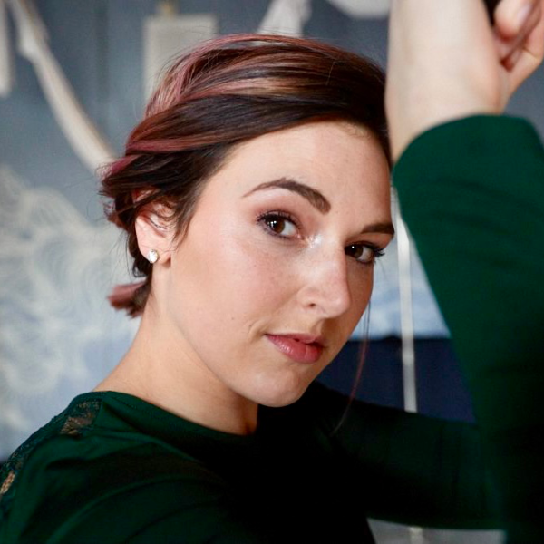
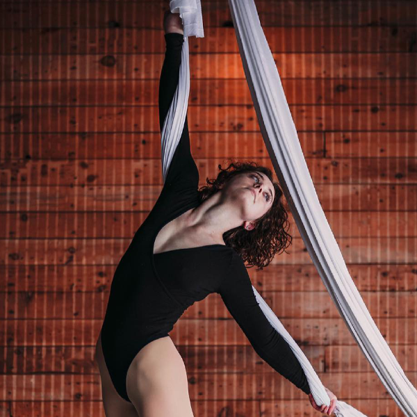

Breanna Rheinshmidt
Bre has been teaching at the studio for four years! She started off on hammock focusing on combining yoga and the fabric. That avalanched into performing and competing on hammock. The love for teaching and learning new skills turned into learning a new apparatus- aerial hoop/ Lyra! She has found her passion and Lyra has become her primary focus for teaching and competing. Her other favorite aspect of the performing arts is the audience engagement. She loves to perform and share the excitement surrounding aerial.
Madison Zweber
Madison’s passion for teaching at Studio Sky stems from her background of being both a performer, athlete, and coach. Madison practiced dance for ten years specializing in musical theater performances, jazz, and kick line. As well as competing as a competitive gymnast and cheerleader. For three years she was a competitive cheerleading and tumbling coach, along with being a choreographer for both cheerleading and dance. Choreographing routines that ranked at both a state and national level. At Sky Studio, Madison continues her passion for both fitness and performance arts.